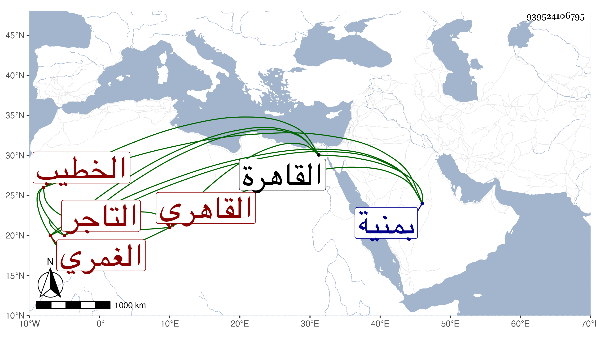

0902Sakhawi.DawLamic.ITO20230111-ara1.EIS1600.939524106795
Biography ID: 939524106795
353
أحمد بن محمد بن عبد الحق الشهاب الغمري ثم القاهري الخطيب التاجر أخو علي الآتي . ولد في سنة عشرين وثمانمائة تقريبا بمنية غمرو ونشأ بها فحفظ القرآن وتكسب كأبيه بالتجارة في البز وتحول بعده إلى القاهرة فقطنها وخطب أحيانا بجامع الغمري بها ، وحج وأنجب أولادا وسمع علي بل وعلى شيخنا فيما أظن . مات بعد أن تضعضع حاله وتوعك قليلا في ليلة الاثنين تاسع شوال سنة ثمان وثمانين وصلى عليه من الغد بجامع الحاكم ثم بمصلى باب النصر ودفن بالقراسنقرية رحمه الله .
